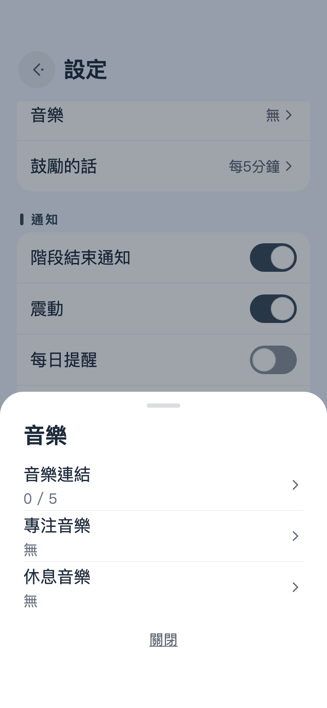
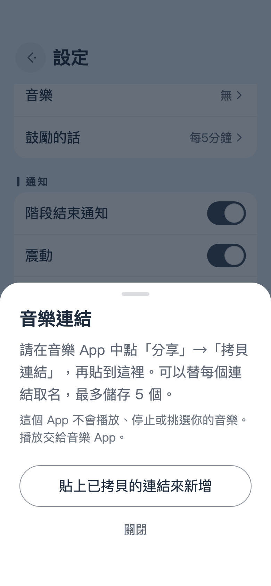
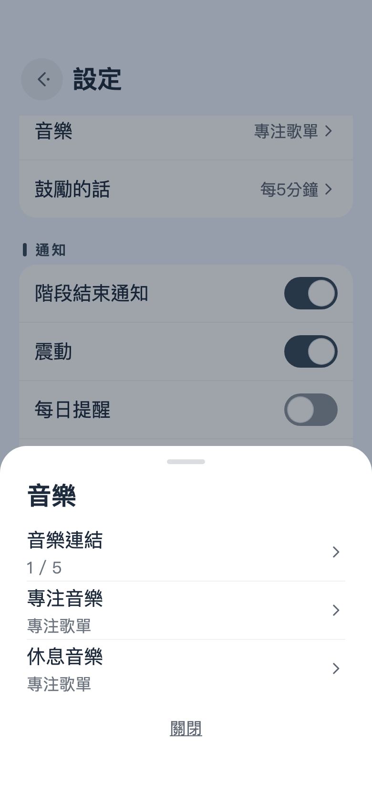
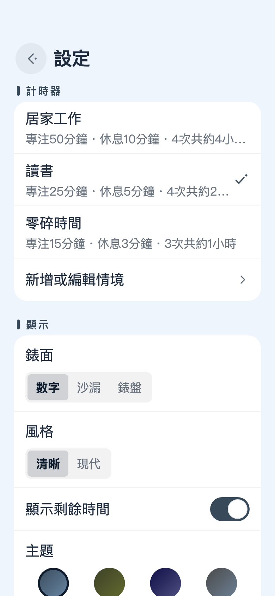

在 Amazon Music 拷貝連結
- 打開想讓它陪你做事的歌單、專輯或歌曲。
- 點一下分享按鈕。如果找不到，分享就收在「…」選單裡。
- 在跳出來的清單中選擇拷貝連結。在 iPhone 上，有時只寫著拷貝。
這個 App 不播放背景音樂，也不會停掉你正在聽的歌。音樂交給你平常用的 App 去放。不過，你可以把常聽的歌單連結先寄放在這裡，坐下來開始工作、或起身去休息的時候，一點就能打開。下面以 Amazon Music 為例，一步一步走一遍。



不一定要用 Amazon Music。只要能從分享選單拷貝連結的 App，步驟都一樣。不只歌單，專輯、單曲、電台的連結也能存。最多可以存 5 個，專注和休息也能各選不同的音樂。
連結要在哪裡打開，是手機決定的。裝了音樂 App 的話，通常會在 App 裡打開；沒裝，或是依手機的設定，也可能改在瀏覽器裡打開。打開了卻沒有自己開始播放時，請在音樂 App 裡按下播放。
在家裡坐定工作一整天，和只有十五分鐘的午休，適合的節奏並不一樣。在設定 › 計時器選一個情境，專注時間、短休息、長休息，以及長休息前的專注次數，都會一起換過來。
名稱和時間都能在新增或編輯情境裡修改，也可以加上自己的情境，全部最多 5 個。App 原本就有的三個，隨時都能用恢復原本的時間回到最初的樣子。

按鈕只有三個。其餘的時間，把它放在桌上，別去管它就好。
按下中間的圓形按鈕，專注就開始了。時間到了，畫面會換成「辛苦了！」，可以從那裡接著開始休息。
左邊的按鈕是從頭來過，右邊的則往下一段走，專注之後進入休息，休息之後回到專注。計時中或暫停時，它會先問你一聲，手滑按到也不會白費。
有時候不想看到數字，有時候又只想瞄一眼。點一下計時器，剩餘時間的數字會暫時出現或消失。設定不會因此改變。
螢幕中央的話，大約每 5 分鐘會安靜地換一次。等不及的時候，點一下那一帶的任何地方，下一句就會出現。
從右上角的齒輪打開。要關上時，從左往右輕輕一滑。計時器在走的時候，齒輪會先躲起來。
如果把手機立在桌上，當成一座小小的座鐘，橫放會比較自在。
時間到了，Take It Easy 會用震動和通知讓你知道。不會響起鬧鈴。
第一次按下播放時，App 會問你能不能傳送通知，計時器則不等你回答就先走起來。之後想改變心意，請到設定 › 通知。如果那裡寫著「通知已關閉」，點一下開啟系統設定，在那邊允許就好。通知的聲音照手機本身的設定。
每天一次，在你選好的時間輕輕叫你一聲。那天如果已經完成過一段專注，它就不出聲。
如果其他 App 老是來拍你的肩膀，可以試試手機的專注模式。iPhone 打開控制中心，點一下專注模式，選擇勿擾模式或工作。Android 從螢幕頂端向下滑兩次，點一下零打擾。如果仍想收到階段結束通知，請把 Take It Easy 加入允許的 App。
這裡沒有廣告，也不必註冊帳號。如果它在你的桌上待得還算稱職，可以從設定 › 其他 › 贊助小費送一點小費，讓開發得以繼續下去。
每一筆小費都是單次付款。付了也不會多出或改變任何功能，所以之後也沒有什麼需要恢復的。
它本來就做成不發出聲音。時間到了，會用震動和通知讓你知道。如果收不到通知，請看看階段結束通知。
不會。這個 App 完全不碰任何和聲音有關的機制，所以既不會停掉其他 App 的音樂，也不會把音量調小。
你拷貝的內容裡，似乎沒有以 https:// 開頭的連結。請從音樂 App 的分享選單重新拷貝連結，再點一次貼上已拷貝的連結來新增。就算連結前後還夾著介紹文字，也只會存下連結本身。
連結要用哪個 App 打開，是手機決定的。裝了音樂 App，而且它被允許開啟自己的連結，就會在 App 裡打開。可以試著重新安裝音樂 App，或看看手機的「預設開啟」設定。
在主畫面上計時的期間，螢幕會一直亮著。停下來的時候，或是打開了設定、其他 App 時，螢幕就照平常的方式關閉。
會。App 先算好這一段結束的時刻，再朝著那個時刻倒數，所以打開其他 App 或關掉螢幕，時間都不會跑掉。時間到了，會用通知告訴你。
設定、存下的連結，還有過去的累計紀錄，都只留在你的手機裡，不會放到別的地方。詳細內容寫在隱私權政策裡。
用起來的感想也好，哪裡出了問題的回報也好，我們都心懷感謝地讀著。方便的話，請附上手機型號、作業系統版本和 App 版本（在設定的最下方），找出原因會容易得多。